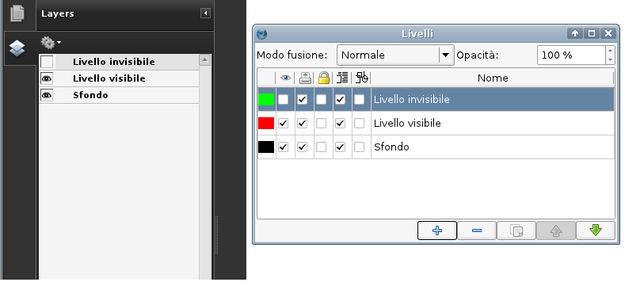

Lavorare con i livelli
Forse conoscete già il concetto di livello per averlo incontrato in altri programmi di disegno o di grafica. I livelli possono essere utilizzati per molti scopi diversi, ad esempio per separare oggetti stampabili e non stampabili come le griglie, per creare versioni in lingue diverse dello stesso documento in un unico file, o semplicemente per rendere più facile la creazione e la modifica di determinati oggetti senza disturbarne altri.
Per impostazione predefinita, un nuovo documento contiene un solo livello chiamato “Sfondo”. Ciascun oggetto creato su un livello si trova alla propria quota, quindi possono esistere più quote sullo stesso livello. Per molti documenti sarà necessario un solo livello, ma a volte può essere desiderabile lavorare con più di un livello.
Per aggiungere un nuovo livello, aprite la finestra di dialogo Livelli in Finestre > Livelli oppure premete F6:
A prima vista questa finestra di dialogo sembra semplice, ma è molto potente. Nella parte superiore potete impostare un modo fusione e l'opacità del livello.
Nella parte inferiore sono collocati gli strumenti fondamentali per la gestione dei livelli, che da sinistra a destra sono:
- aggiunta di un livello
- eliminazione di un livello
- duplicazione di un livello selezionato, compreso il suo contenuto
- spostamento verso l'alto di un livello selezionato
- spostamento verso il basso di un livello selezionato
La maggior parte della finestra di dialogo è occupata dall'elenco dei livelli, che comprende alcune opzioni per i livelli stessi. Queste sono, da sinistra a destra:
- colore dell'indicatore di livello: ogni livello ha un colore unico che aiuta a identificare gli oggetti che si trovano su di esso. Potete abilitare gli indicatori di colore per gli oggetti in Vista > Mostra indicatori livello. Per cambiarlo, fate clic sul colore del livello interessato: si apre un pannello per la selezione del colore, dove potete scegliere un colore diverso o crearne uno nuovo.
- visibilità del livello: qui potete stabilire se il livello è visibile o invisibile. La visibilità non ha alcuna influenza sulla stampa, quindi fate attenzione all'uso di questa funzione, poiché può accadere che del contenuto invisibile venga stampato o inserito nel PDF esportato perché avete dimenticato di disabilitare anche la stampa.
- stampabilità del livello: questa opzione ha una funzione simile a quella precedente, e anche in questo caso dovreste usarla con cautela, poiché un livello visibile potrebbe essere impostato per non essere stampato né esportato nel PDF.
- blocca livello: questa opzione blocca tutti gli oggetti sul livello interessato, che quindi non potranno essere modificati.
- flusso di testo per gli oggetti del livello: se abilitata, quest'opzione fa sì che il testo contenuto in cornici su livelli inferiori fluisca intorno agli oggetti sul livello selezionato.
- modo contorno per gli oggetti del livello: quest'opzione può essere utile se desiderate rendere Scribus più veloce, poiché quando è attivata tutti gli oggetti sul livello sono visualizzati in modalità “scheletro”. È particolarmente efficace quando un livello contiene disegni vettoriali complessi.
- nome del livello: ciascun livello ha un nome unico, che è mostrato qui. Per cambiarlo, fate doppio clic sul campo “Nome” e inseritene uno nuovo.
Passare da un livello a un altro
Ci sono due modi di passare da un livello a un altro. Il primo consiste nel selezionare un diverso livello nella finestra di dialogo Livelli, ma può essere un po' fastidioso dover aprire una finestra semplicemente per cambiare livello. Fortunatamente, la barra di stato nella parte inferiore della finestra di Scribus contiene un selettore livelli, che elenca tutti i livelli presenti nel documento con il loro colore e permette di passare velocemente da uno all'altro.
Spostare oggetti tra livelli
Per spostare un oggetto da un livello a un altro, potete usare il comando “Invia al livello” nel menù contestuale oppure nel menù Elemento nella barra dei menù. Questo comando è presente anche nel menù contestuale degli oggetti nella finestra Schema documento.
Suggerimenti per lavorare con i livelli
- i livelli coprono l'intero documento, non la singola pagina.
- per selezionare tutti gli oggetti che si trovano su un certo livello, usate Modifica > Seleziona tutto avanzato dalla barra dei menù.
- se tentate di eliminare un livello non vuoto, vi sarà chiesto se devono essere eliminati anche gli oggetti presenti su di esso. Se rispondete di no, tutti gli oggetti presenti sul livello eliminato saranno spostati sul livello di sfondo.
- i livelli dei documenti di Scribus non devono essere confusi con i livelli nei file PSD. Essi sono completamente indipendenti gli uni dagli altri.
- Scribus riconosce i livelli dei file di Adobe Illustrator (AI), ma solo se un file viene aperto (File > Apri). Se un file AI con livelli viene importato (File > Importa > Carica file vettoriale), tutti i livelli di AI vengono uniti in uno solo.
- i livelli possono essere utilizzati anche nei documenti PDF versione 1.5 e successive, ma attualmente soltanto Adobe Reader 7 e le versioni successive sono in grado di visualizzare correttamente i PDF con livelli. Scribus può esportare file PDF 1.5 con livelli: per farlo si deve abilitare l'opzione “Includi livelli” nella scheda “Generale” della finestra di dialogo “Salva come PDF”. Adobe Reader leggerà correttamente il contenuto dei livelli:
|  |
I livelli e le loro impostazioni in Adobe Reader (sinistra) e Scribus (destra) |